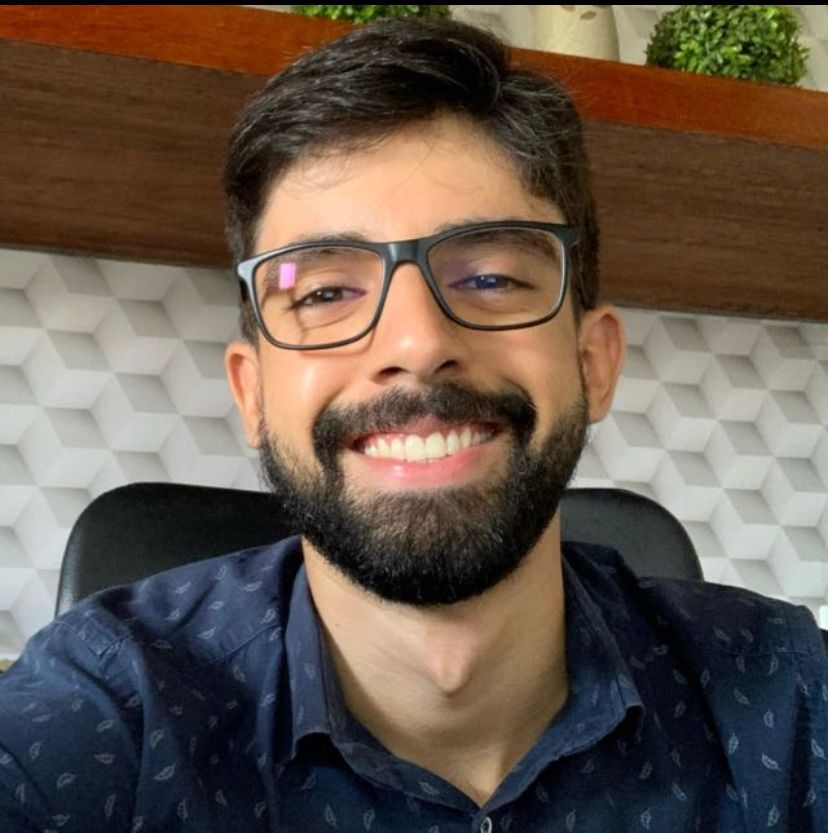
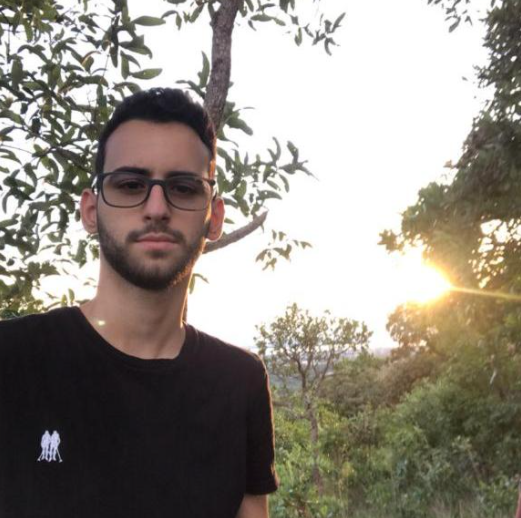

Sobre Nós
Danilo Da Silva Moreira Pires
Nasci em Palmas Tocantins em 1998. Tenho 23 anos e sou apaixonado por livros e diversos assuntos, como a psicologia, PNL, filosofia e tudo que envolve a mente, desenvolvimento pessoal e o comportamento humano. Atualmente estou me descobrindo na área da matemática, lógica e tecnologia… Já passei por 3 faculdades relacionadas à saúde (odontologia e nutrição ) em Alfenas - MG e Goiânia. Não me vejo fazendo um curso nessa área hoje, por mais que amo estudar saúde e compartilhar o pouco que sei. Já fiz estágio em Odontologia (dezembro/2020). Meu primeiro emprego foi em um supermercado como Cartazista (setembro/2021). Faço lives no instagram compartilhando minhas experiências de vida e conteúdos dos livros que leio. Tenho um canal no youtube. Já escrevi um e-book gratuito e um para vendas. Presto serviços para um professor de redação (no instagram e youtube). Fiz (fevereiro/2022) estágio de meio período na área informática/administrativa na empresa Medwork em Palmas-TO. Já fiz 21 lives (disponíveis no youtube) com intuito genuíno de ajudar o próximo. Sobre diversos assuntos como saúde, depressão, alimentação inteligência emocional, alienação, saúde da mulher, etc.
Emannuel Oliveira Pedreira
Nasci em Palmas Tocantins em 2003. Tenho 18 anos, gosto muito de livros de desenvolvimento pessoal, gosto bastante também da área de tecnologia por isso que comecei o curso de sistema de informação, pretendo seguir carreira como desenvolvedor front-end, venho colocando os projetos que eu faço no meu GitHub. Já trabalhei como social media no instagram da @siaochurchpalmas, foi uma experiência muito legal para meu crescimento profissional, já mexi com arduino criando um drone e um mini vídeo game. Meu principais hobbies é correr e jogar tênis de quadra, já até participei de alguns campeonatos de tênis. Sei tocar um pouco de teclado mas preciso treinar mais. Também ajudo a cuidar da mesa de som da igreja, estou ainda aprendendo.